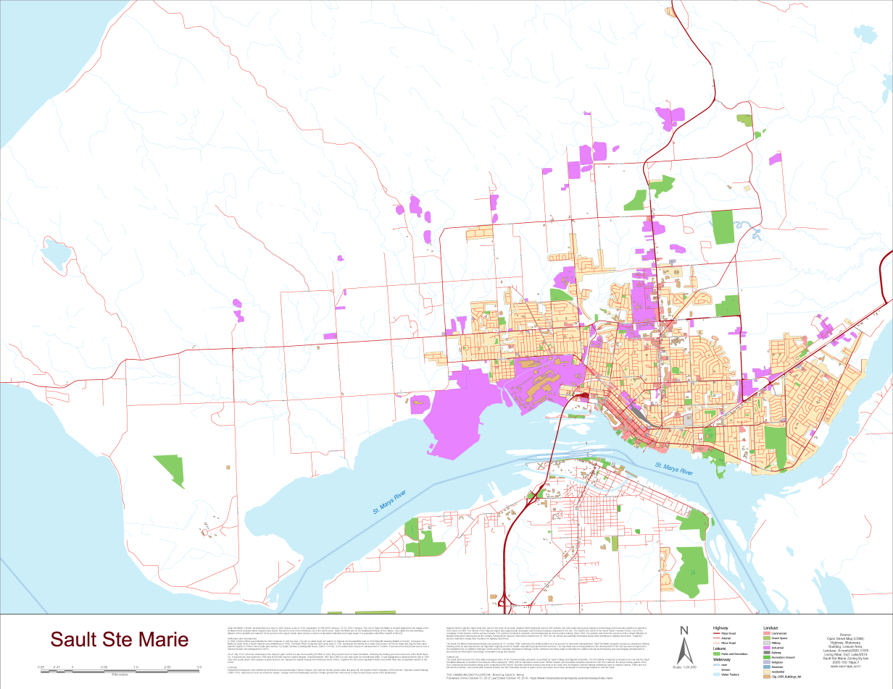

C A R T O G R A P H Y
We provide clean, simple maps for use in reports, presentations, and on websites. Maps can be designed for any scale, and for traditional printing or as interactive web maps. Click one of the grey dots below to view some examples of our completed projects.

A 34" x 44" reference map created to display the land-use
patterns of Sault Ste. Marie, Ontario.

A small-scale map designed to demonstrate the distribution
of remaining wooded areas across the Grey-Bruce region of Ontario.

A reference trail map designed for the public and trail association
volunteers alike to print and carry while exploring or maintaining the trail network.

A map created to support a clerk's report to a municipal council
about recommended amendments to the parking by-law of a popular beach.

A map designed for an environmental committee meeting to demonstrate
the approximate distribution of waste receptacles across the main settlements of a lower-tier
municipality.